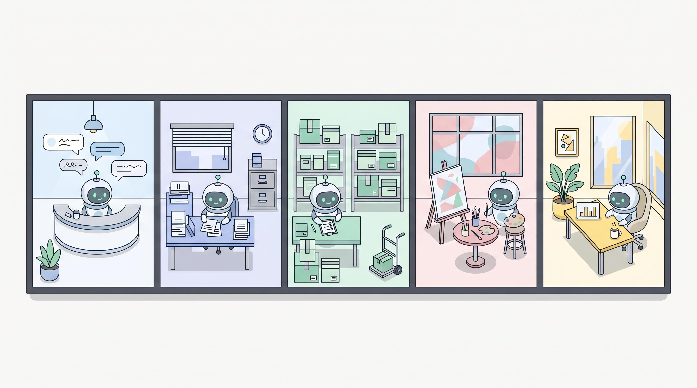

A walk through five rooms of a small business. Every room has one or two agents quietly making it easier. By the end of this station you'll have at least one in mind for your own week.

Where the inbox meets the brand voice. Agents that read, sort, and draft, never closing a ticket on their own.
→ Support ticket triage · Returns classifier · Review responder
The quiet engine room. Invoices, calendars, file naming, gentle reminders. The five-minute chores done fifty times a week.
→ Invoice filing · Meeting scheduler · Document chaser
The things that move. Stock about to run out, supplier prices that changed, shipments that didn't arrive on time.
→ Inventory watchdog · Supplier price alert · Shipment exceptions
The thoughtful drafting partner. Agents are bad at taste, great at watching, summarising, and writing first drafts.
→ Weekly recap · Competitor watcher · Subject line A/B notes
One short note before the day starts. The agent reads the whole company and hands you a single page each morning.
→ Daily briefing · Anomaly digest · Weekly cash & AR snapshot
Every one of these uses the same five parts. Once you can see the anatomy, you stop seeing magic and start seeing patterns.
Trigger, read, guard, compute, post. The names are the same, only the data changes.
Pick the repetitive task you've been carrying since Station 01. Which room does it live in? Front office, back office, stockroom, studio, or corner office? Holding the room in mind helps you sense-check whether your first agent makes sense for the bigger picture.
Third sticker. Six more to collect.